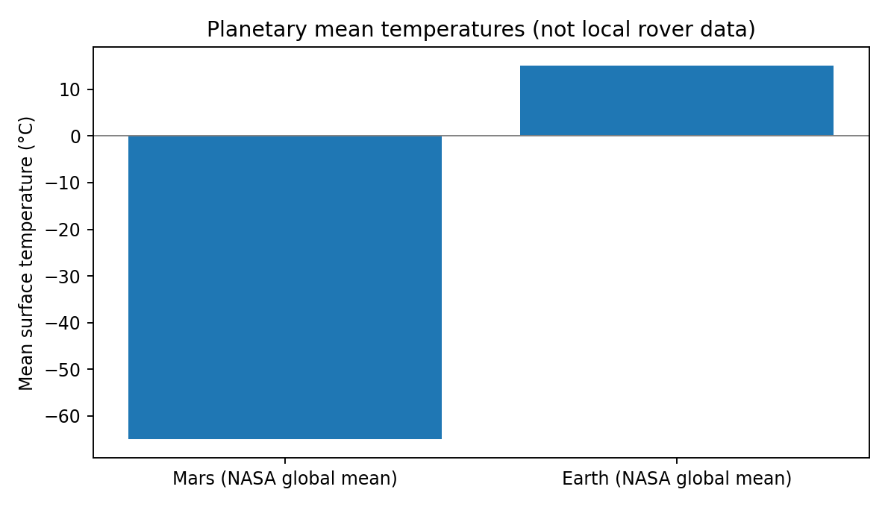
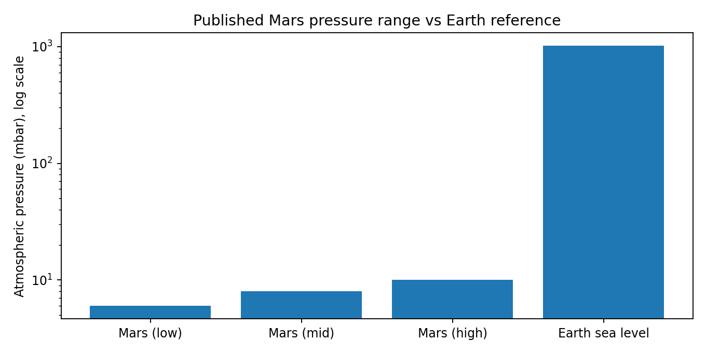

🌲🌳🌲🌳🌲
🕊️ 🕊️
🦌
🐇
Animals in the forest
Watch deer walk, rabbits hop, birds fly, and trees sway in an animated forest.
Explore our eight planets orbiting the Sun and two other known planetary systems. Then zoom toward Earth and explore my research.
The Milky Way contains many planetary systems. These three are real systems, shown as simplified, illustrative orbit diagrams, not accurate orbital simulations.
How long to reach Earth? It depends where you start.
From the nearest star, Proxima Centauri, light takes about 4.24 years to reach Earth. This journey is a visual zoom, not a real-time flight.
A spacecraft launches into orbit, then performs a departure burn to enter a trajectory toward Mars.
Earth escape speed near the surface is about 11.2 km/s. Real missions use staged rockets and carefully planned orbital maneuvers.
Illustrative animation; launch, orbit, and interplanetary injection are simplified.
Explore an illustrative coastal skyline. Move the slider to see how higher water levels can affect low-lying places.
Illustration only: not a real flood map, timeline, or forecast. Local flooding depends on elevation, tides, storms, and defenses.
Watch forest animals moving, explore ancient dinosaurs, and discover the living ocean. Earth's changing climate and habitats affect the species that share our planet.
Watch deer walk, rabbits hop, birds fly, and trees sway in an animated forest.
Non-avian dinosaurs lived millions of years ago and went extinct about 66 million years ago. Birds are living dinosaurs.
Marine ecosystems include fish, sea turtles, coral reefs, and plankton. Warming and acidification put many habitats at risk.
Animated nature experience only · not an animal research project.
High above us, stratospheric ozone absorbs much of the Sun's harmful ultraviolet radiation. Watch the glowing layer surround our rotating planet.
Not to scale. Ozone depletion and global warming are different environmental problems, though atmospheric chemistry connects them.
Leaving interplanetary space and entering Mars orbit…
Atmospheric entry · heating and turbulence
Mars has a very thin atmosphere. During high-speed entry, aerodynamic forces and heating buffet the vehicle; this animation is illustrative, not mission telemetry.
Follow a NASA-inspired rover across the rocky landscape as it studies the surface and searches for clues about ancient water.
Exploration in progress · watch the rover cross the terrain
Illustrated exploration, not footage or a model of a specific NASA rover.
Explore original Python visualizations based on published NASA measurements and a reproducible Chicago satellite-analysis workflow.

24 published monthly NASA GISTEMP observations, October 2024–September 2026. This short window cannot establish a long-term climate trend.
View climate analysis →NDVI = (near-infrared − red) / (near-infrared + red). This vegetation index can be calculated from Landsat imagery to compare green cover over time.
Research status: Python workflow prepared; no verified Chicago satellite-change results yet. No satellite observations have been invented.
View satellite workflow →NASA-published reference values illustrate why future astronauts would need pressure-controlled habitats and thermal protection.

Approximate reference means: Mars is about 80°C colder than Earth. These are reference values, not rover time-series measurements.

Mars has less than about 1% of Earth's surface atmospheric pressure in the reference comparison. Conditions vary by location and season.
Passing the Moon and rocky objects on our way to Mars.
A real Mars trip typically takes about 6–9 months, depending on the trajectory.
Explore our planet, then travel through space to Mars.
Environmental Studies Portfolio
Exploring environmental studies through data, remote sensing, and research · with a growing interest in climate systems and planetary atmospheres.
I'm an Environmental Studies student at Loyola University Chicago with an interest in using data to understand the natural world. I'm building skills in Python, environmental analysis, and satellite remote sensing, and hope to work on climate, atmospheric, or planetary science data in the future.
Start with three planetary systems, zoom toward Earth, explore wildlife and oceans, then travel through Mars’s atmosphere. Or go straight to the research projects below.
All animations are illustrations. Earth footage is not included.
Original research writing, verified NASA-based comparisons, reproducible Python analyses, and a Chicago remote sensing workflow. Every project clearly explains its evidence and limitations.
Research papers, visual explanations and research presentations are available below. The animated forest is an exploration scene, not a scientific dataset.
Tap a topic to see the science, what the evidence can tell us, and what still needs investigation.
Mars has a very thin atmosphere, low average temperatures and intense environmental challenges. My research investigates water, possible ancient life and technologies that could support exploration.
Evidence note: NASA reference measurements are not proof that Mars is habitable today.
Explore the Mars paper →My original research on Martian water, possible past life, and the technology needed for human settlement.
Read paper →Original comparison of NASA-published Martian temperature and pressure reference values, connected to my habitability research.
Explore Mars project →Original plots and calculations using 24 published NASA GISTEMP monthly anomalies (2024–2026), with clear limits.
Explore Earth climate project →My own Python model tests how hypothetical coastal neighborhoods with different ground elevations could be affected by rising water. Includes interactive scenarios, calculations and a chart. This is not a real flood forecast.
Explore sea level research →GIS workflow for Landsat vegetation NDVI and changes between two comparable Chicago-area scenes.
Explore remote sensing project →Evaluated Ridge regression against a previous-month baseline on a six-month holdout. Baseline performed better.
Explore machine learning project →I'm currently developing a GIS project related to climate change. I'll share the maps, methods, data sources, and findings here when the project is complete.
Work in progress · results and maps not published yet.Exploration of caching approaches for language-model inference and performance.
Source repository and verified documentation not included yet.Bachelor of Arts in Environmental Studies · In progress
Training covered how satellites collect information about Earth, including sensor types, satellite orbits, spatial and temporal resolution, and ways remote sensing supports environmental monitoring.
What I learned and can explain from the training:
I'm interested in internships, student research, and opportunities involving environmental data, climate science, and scientific computing.
Replace the LinkedIn and GitHub links with your own profile URLs before publishing.
NEW RESEARCH PAPERS
Three additional literature based research papers with visually redesigned research presentations. These synthesize published scientific information and explain the limits of the evidence.
Read the research question, methods, evidence and conclusion.
Read the research question, methods, evidence and conclusion.
Read the research question, methods, evidence and conclusion.
FEATURED DATA ANALYTICS RESEARCH
Compare real NOAA tide gauge trends for New York City, Miami, Norfolk, Charleston and Honolulu. Explore an animated coastal scene and download the underlying data, SQL analysis, Python code, spreadsheet and research slides.
Important: Historical sea level rates are not predictions that entire cities will be underwater.
Explore city research and animation →DATA ANALYTICS AND SCIENTIFIC RESEARCH
Download research slides and spreadsheet datasets. These are published observations or reference values. My analyses distinguish actual measurements from models and illustrations.
How do global temperature anomalies vary over 24 observed months?
How do published Mars temperature and pressure references compare with Earth?
Does a simple Ridge model beat the previous month baseline on a six month holdout?
How does global coral reef heat stress exposure differ across bleaching events?
Satellite vegetation index workflow. Imagery analysis is still in progress, so no measured Chicago vegetation change is claimed.